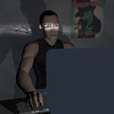

= = = = >Web site was hacked by Agapov25 and Morfey[M.A.K.K.]!< = = = =  #ICQ: 97482821
This is our world now... the world of the electron and the switch, the beauty of the baud. We make use of a service already existing without paying for what could be dirt cheep if it wasn't run by profiteering gluttons, and you call us criminals. We explore... and you call us criminals. We exist without skin color, without nationality, without religious bias...and you call us criminals. You build atomic bombs, wage wars, murder, cheat, and lie to us and try to make us believe it is for our own good, yet we're the criminals. Yes, I am a criminal. My crime is that of curiosity. My crime is that of judging people by what they say and think, not what they look like. My crime is that of outsmarting you,something that you will never forgive me for. I am a hacker and this is my manifesto. You may stop this individual, but you can't stop us all... after all, we're all alike.